Table tools for statistics and visualization
This set of tools allows you to generate statistics and visualize your data using charts, images, or maps, when possible.
The available options will depend on the characteristics of your data.
 Columns statistics
Columns statistics
Setting Up the Node:

How to Use the Node:
Columns Statistics tool returns a table with general statistics for all columns. Some statistics can only be calculated for numeric values; in those cases, the value remains empty. You can use this tool with any kind of data.
This example is from a CSV file with data shown below.

To display the dialog, double left-click on the node. In this case, the dialog is forinformational purposes only; it shows which statistics TAPIS will calculate and return in a table.

After clicking the OK button, you will obtain a table similar to the one below.

Recipes where this tool is used:
No one yet
 Scatter Plot
Scatter Plot
Setting Up the Node:
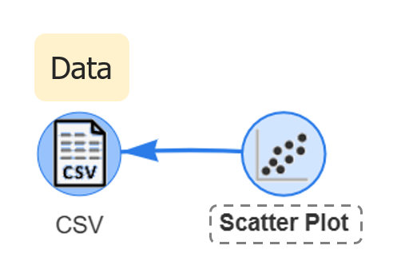
How to Use the Node:
Scatter Plot tool allows you to create a scatter plot graphic with dots or lines. You can add several datasets to the same chart. These datasets can be located in separate nodes; you only need to connect those nodes to the Scatter Plot tool. This tool can be used with any type of data, as long as it contains numerical values suitable for generating the chart.
Keep in mind that all datasets must share the same X-axis values. This tool allows you to create charts using both points and lines, and it also supports dual Y-axes, enabling you to display two different scales within the same chart.
This tool is limited to a certain number of X-axis data points. If there are too many records, the tool may notify you that the dataset exceeds the supported limit and that you need to reduce the number of records.
In this case, you can use a filtering tool (STA or Table, depending on your needs and preferences) to reduce the amount of data before connecting it to the Scatter Plot tool.
This example is from a CSV file with data shown below.
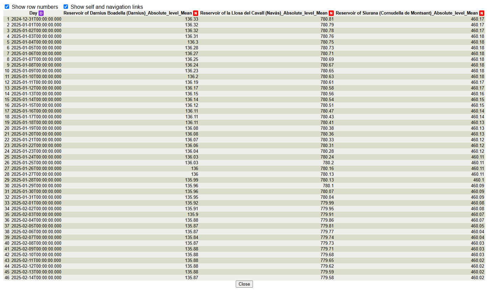
To display the dialog, double left-click on the node. In this dialog, the chart preview area is displayed on the right, where the graph will be drawn. On the left, you will find the configuration panel that must be completed to select the information required to create the chart.
Each series represents a dataset that will draw either a line on the chart or a set of related points. Datasets are expected to be organized by columns. If your data is organized by rows instead, you can use the Pivot Table tool to restructure the table into a suitable format.
The Data From selector allows you to choose which of the connected nodes will provide the data. Next, select the columns that will be used for the X-axis and Y-axis. You must also choose which of the two available Y-axes (Assign to Y Axis) will be used for the selected data.
Using the Style option, you can choose whether the series will be displayed as a line chart or a scatter plot. Points and lines can be combined within the same chart, and each series can use a different style if required.
The Color option allows you to choose the color used to display the data. Clicking the color square will open a color palette where you can simply choose the desired color.
You can also assign a custom name to the series so that it appears in the chart legend. If no name is provided, the application will use the name of the node and the selected column.
By enabling the Show Regression Line checkbox, a regression line will be automatically generated and displayed on the chart.
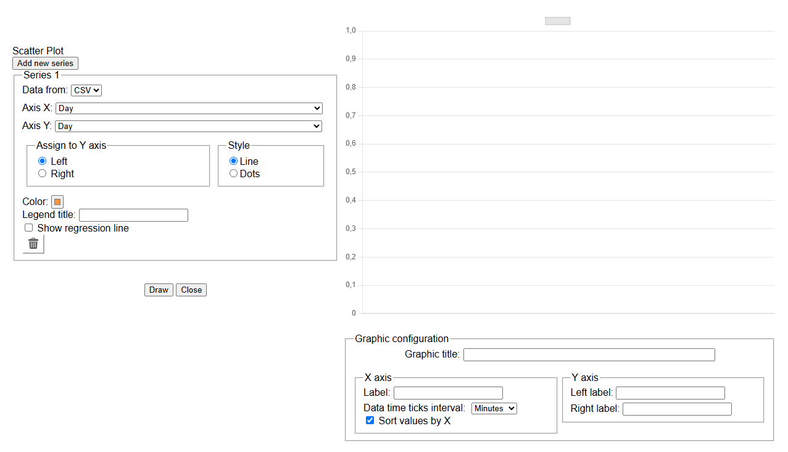
This is the color picker that expands when you click the color box.
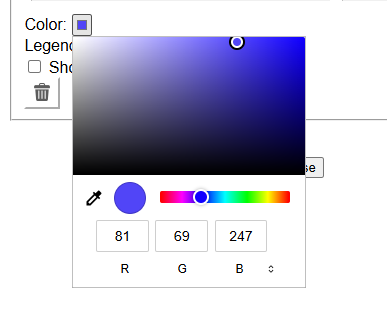
Graphic configuration: This section is located in the lower part of the dialog. If more series are added, it will move further down.
With this section, you can set a chart title (Chart Title). You can also name the axes (labels) and, in the case of the X-axis, choose the time interval used to generate the tick marks, as well as the option to automatically sort the dates by date (Sort values by X).
If the data is not properly ordered, the resulting chart will be incorrect and may look unusual.
For the Y-axis, you can assign a name (label) to each axis.
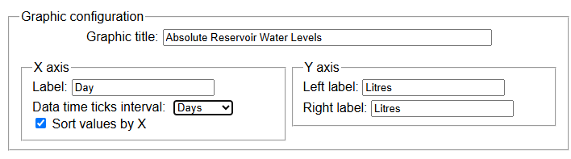
This is an example of how to fill in a Serie. After filling it in, you have to click Draw button to display it in the graph.
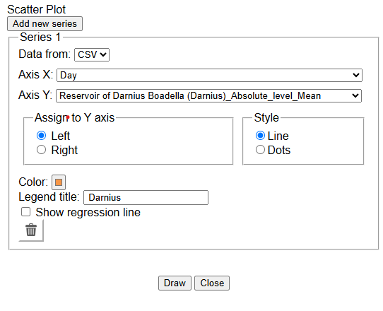
It is possible to add series to your graph by clicking Add new series"> above the series section. In this example, we will draw three different series.
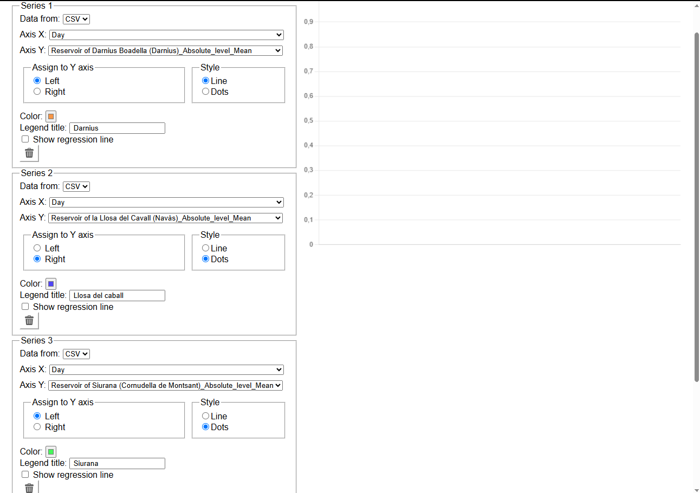
After clicking Draw, the graph will be displayed as shown below. You can hide or show the line and data points by clicking the series name in the legend.
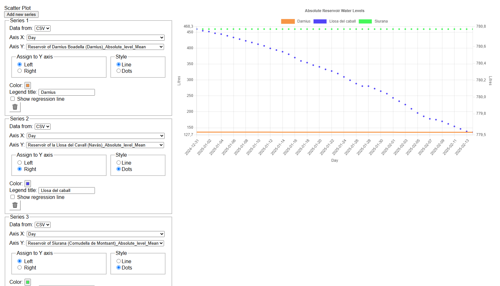
Regression Line: This is an example of an automatically generated regression line. To add it to your graph, check the Show Regression Line checkbox. The color of the line will be slightly darker than the color selected to represent your data.
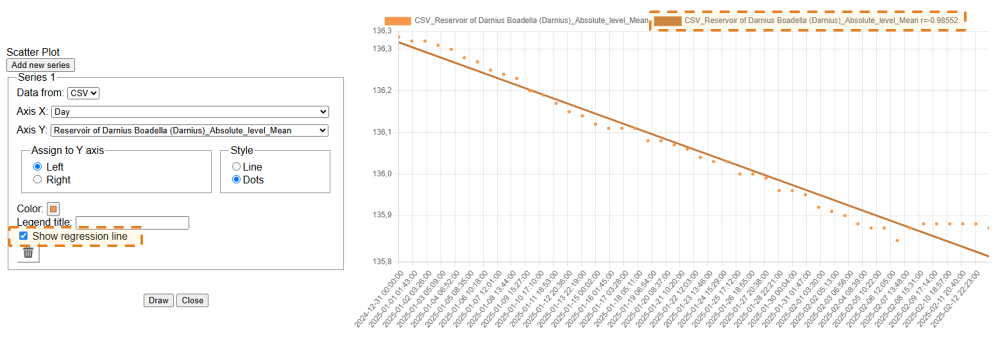
Recipes where this tool is used:
 Bar Plot
Bar Plot
Setting Up the Node:
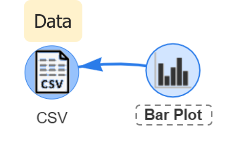
How to Use the Node:
Bar Plot tool allows you to create Bar and Pie charts. In this case, you can only select a single dataset to create a chart. To use this tool, you can work with any type of data as long as it contains numerical values.
These are the data used in the example.
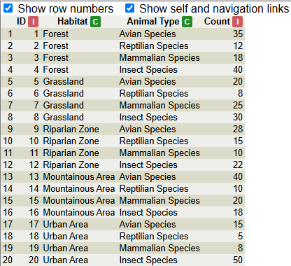
To display the dialog, double-click the node with the left mouse button. The dialog is the same for both types of charts. You only need to select the desired type in the Plot Type section. Once the data has been filled in and the Draw button is clicked, the graph will appear at the right.
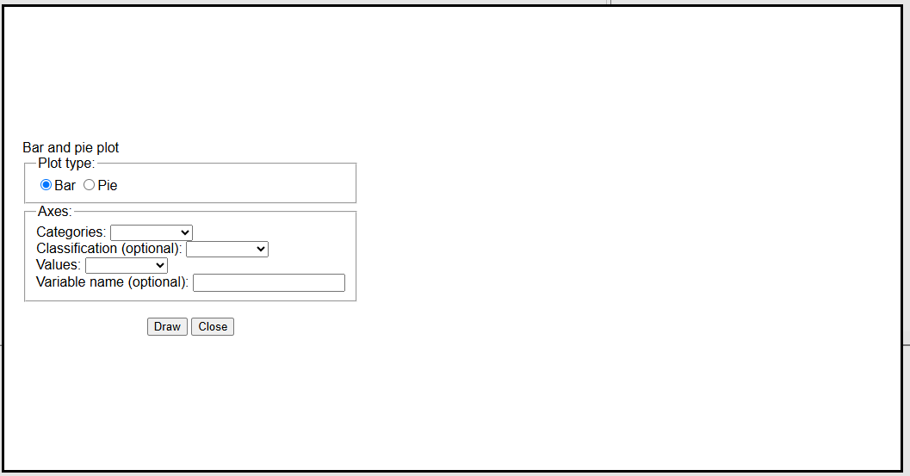
Bar chart:
The process for creating a bar chart and a pie chart is very similar. The only differences are the selected Plot Type and the optional Classification feature, which can be applied to bar charts but is disabled for pie charts.
Categories: The column used to divide your data into categories. A separate bar will be created for each unique category found in the selected column.
Classification: Optionally, you can select a column to divide each bar into stacked subcategories. A different segment will be created for each unique value found in the selected column, making it easier to visualize how the total value of each category is distributed.
Values: Select the column that contains the numerical values to be represented in the chart. These values determine the height of the bars or the size of the pie chart segments.
Variable name: A label used for the Y-axis, which represents the numerical values of the dataset.
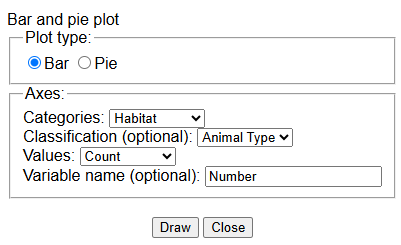
Once you have completed the previous sections, click the Draw button to visualize the graph.
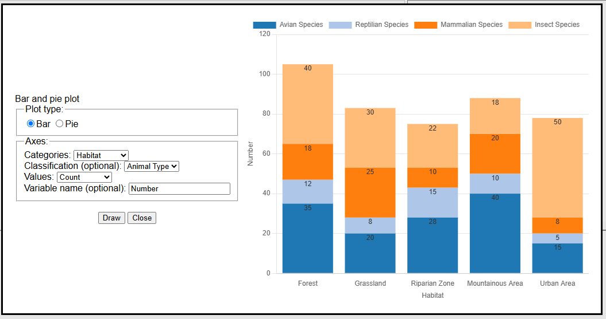
Below is an example using the same values without the Classification option. It can be observed that some information is missing in the labels; however, this should be corrected in the data as a prior step before using the chart.
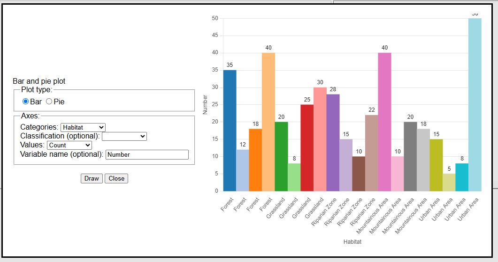
Pie chart:
In the case of the Pie chart, subcategories cannot be created as in the bar chart. The same values as in the bar chart example have been selected. In this case, the issue with the labels also remains the same.
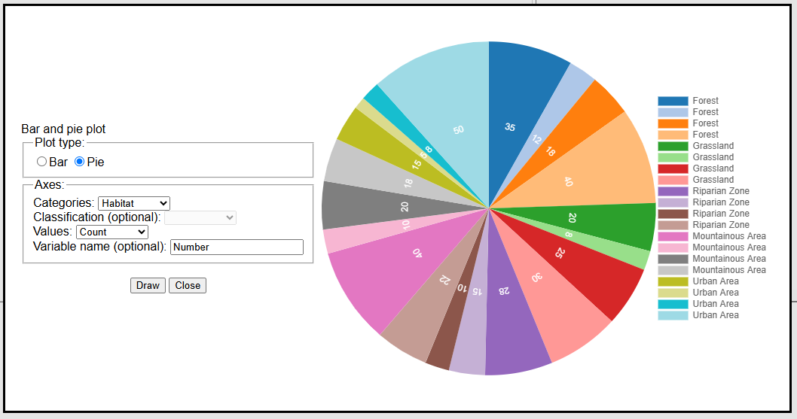
It is possible to use the Aggregate Column tool to concatenate categories and create more understandable labels. This is the result.
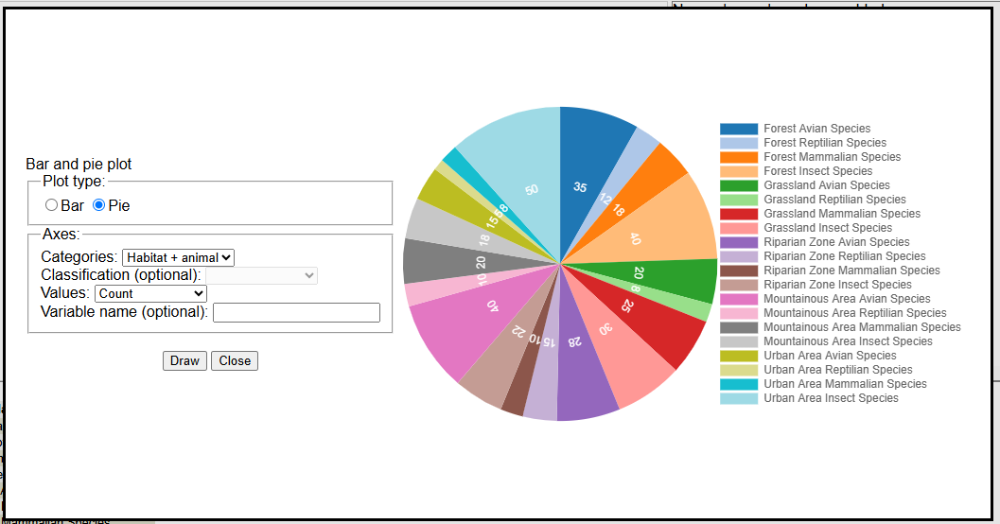
Recipes where this tool is used:
 Image Viewer
Image Viewer
Setting Up the Node:
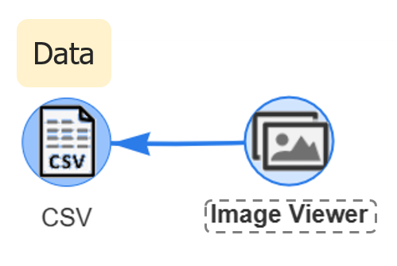
How to Use the Node:
The Image Viewer tool allows you to visualize images contained in your data in URL format. This node can be used with any other type of node as long as it contains one of its attributes in URL format.
Below is the data that will be used as an example.
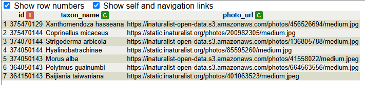
To display the dialog, double left-click on the node. This dialog is simple because it only contains one section where you need to select which attribute contains the image URL (Image URL) and which attribute contains the label you want to display under the image (Label). You can also configure the size in which the images are displayed (Image size (px)).
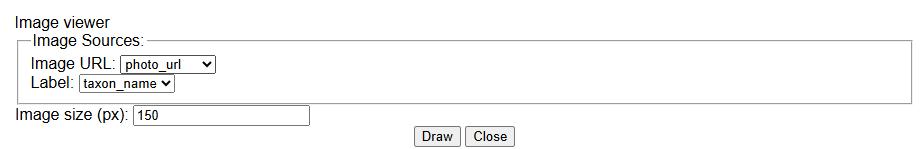
This is an example. After completing all required parameters, click the Draw button.
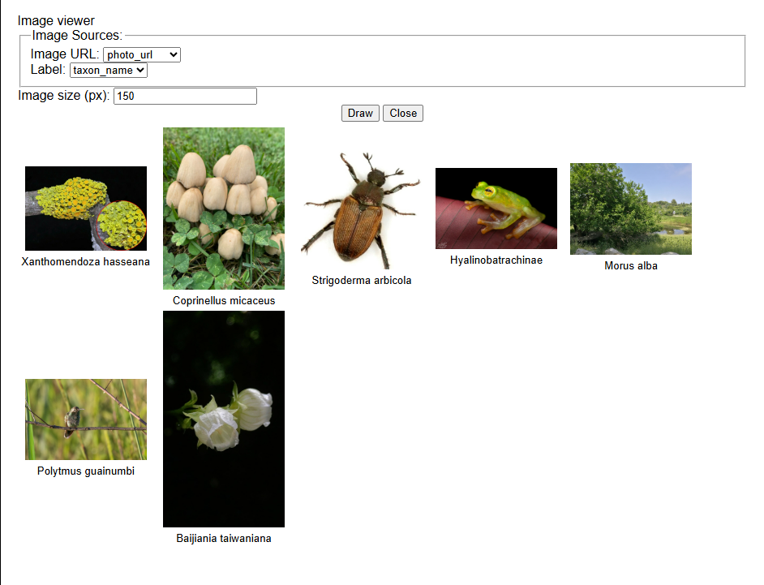
This is another configuration of the same pictures, with another column used as a label and a different image size.
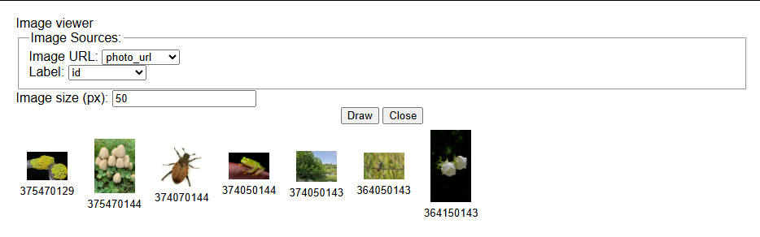
Recipes where this tool is used:
No one yet
 Open
Map
Open
Map
Setting Up the Node:
How to Use the Node:
Recipes where this tool is used: